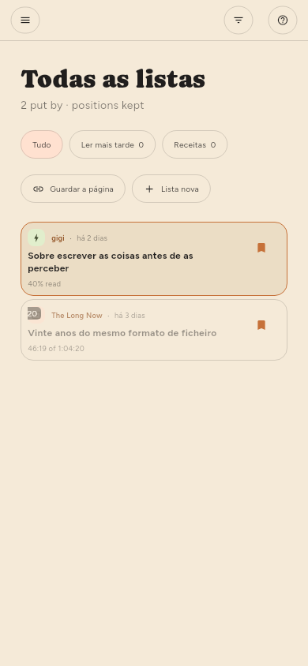

← Encontrar coisas · Índice · Gerir fontes →
Guardar coisas
Guardar no leitor, ou s a partir da lista. Os artigos guardados ficam de fora de tudo o que liberta espaço.
Listas (só Premium)
Guardados é uma lista, e pode criar quantas mais quiser — por tema, pelo que pretende fazer com os artigos, como preferir arquivar. Ficam na estante à esquerda, em Listas, com o que cada uma contém ao lado do nome.

| Para | Faça |
|---|---|
| Criar uma | + no título Listas, ou Lista nova no menu de guardar |
| Pôr lá alguma coisa | Guardar arquiva na lista que aparece preenchida na estante |
| Escolher outra lista | O ▾ ao lado de Guardar, um clique com o botão direito, ou manter premido |
| Tirar de lá | Guardar outra vez, na lista onde está arquivado |
| Mudar o nome ou remover uma | A roda dentada dela na estante, como num feed |
Guardar vai para a última lista que escolheu. Escolher uma lista no menu arquiva o artigo e torna essa lista a que o simples guardar usa daí em diante — a estante mostra qual, preenchendo o marcador. Até escolher outra, essa lista é Guardados, que é o que guardar sempre quis dizer.
Um artigo pode estar em várias listas ao mesmo tempo, e tirá-lo de uma não mexe nas outras. Guardados em si não pode mudar de nome nem ser removida: o simples guardar tem de ter um destino, e todos os dispositivos concordam nesse.
Remover uma lista deixa os artigos que lá estão, desde que um feed ou outra lista ainda os tenha — a mesma regra de remover um feed. Remover uma fonte não mexe nos artigos guardados, e regista de onde vieram antes de a fonte desaparecer.
As listas passam entre os seus dispositivos, com os artigos que contêm.